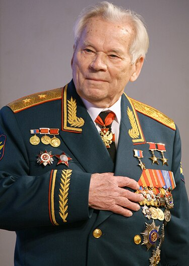

Historia
Mikhail Timofeevich Kalashnikov, (em russo: Михаил Тимофеевич Калашников, transl. Mihail Timofeevič
Kalašnikov; Kurya, Altai, 10 de novembro de 1919 — Ijevsk, 23 de dezembro de 2013) foi um militar,
inventor e armeiro russo, projetista de armas notável pelo célebre fuzil de assalto AK-47 e suas
melhorias o AKM e AK-74, bem como a metralhadora leve RPK e a metralhadora PK.
Filho de camponeses kulaks que foram deportados para a Sibéria por Stálin, ele se tornaria sargento no
Exército Vermelho e subiria ao posto de tenente-general por conta da sua invenção, além de se tornar
deputado no Soviete Supremo. Seu filho Victor Kalashnikov também foi projetista de armas. Mikhail
Kalashnikov foi condecorado duas vezes Herói do Trabalho Socialista e uma vez Herói da Federação
Russa.
Kalashnikov era, segundo ele mesmo, um consertador autodidata que combinava habilidades mecânicas inatas
com o estudo de armamento para projetar armas que se tornaram onipresentes no campo de batalha. O
fuzil AK teve 100 milhões de exemplares produzidos em todo o mundo. Embora Kalashnikov sentisse
tristeza pela distribuição descontrolada destas armas, ele se orgulhava de suas invenções e de sua
reputação de confiabilidade, enfatizando que seu fuzil é "uma arma de defesa" e "não uma arma de
ataque"; sempre mantendo que a criou para a defesa da pátria. Em 2017, uma estátua em sua homenagem
segurando o AK-47 foi inaugurada em Moscou; e em 2019, a capital russa viu uma celebração de uma
centena de crianças em idade escolar em homenagem ao seu 100ª aniversário, com partidas de paintball e
desmontagem de modelos fictícios de fuzis AK-47.
Curiosidades
- Depois de completar a sétima série, Mikhail, com a permissão de seu padrasto, deixou sua família e voltou para Kurya, pedindo carona por quase 1 000 km. Em Kurya, ele encontrou um emprego em mecânica em uma estação de trator e desenvolveu uma paixão por armas.
- Em 1944, ele projetou uma carabina a gás para o novo calibre 7,62x39mm. Esta arma, influenciada pela do rifle M1 Garand, perdeu para a nova carabina Simonov que eventualmente seria adotada como a SKS; Mas se tornou uma base para sua entrada em uma competição de rifle de assalto em 1946.
- Ele também desenvolveu a metralhadora PK de uso geral (em russo: Пулемет Кала́шникова - Metralhadora Kalashnikov), que usou o mais poderoso cartucho 7,62x54R do rifle Mosin-Nagant.
- Durante uma visita aos Estados Unidos no início da década de 2000, Kalashnikov foi convidado a fazer uma visita na Virginia que abriga o Museu Americano de Guerra, ele ficou visivelmente emocionado ao ver seu antigo tanque em ação, pintado com seu nome em cirílico.
- Kalashnikov morreu em 23 de dezembro de 2013, aos 94 anos de idade, em um hospital em Izhevsk, capital de Udmurtia e onde ele morava, por hemorragia gástrica.
Biografia
Mikhail Kalashnikov nasceu em 10 de novembro de 1919 em Kurya, na província de Altai, na União Soviética; agora Altai Krai, na Rússia. Apelidado "Micha", era filho dos camponeses Aleksandra Frolovna Kalashnikova (née Kaverina) e Timofey Aleksandrovich Kalashnikov, descendentes de cossacos, seu nascimento ocorreu durante a Guerra Civil Russa. Sua mãe teve dezoito filhos, dos quais oito sobreviveram. Em 1930, seu pai e a maioria de sua família foram privados da propriedade e deportados à vila de Nizhnyaya Mokhovaya, Oblast de Tomsk, na Sibéria. Em sua juventude, Mikhail sofria de várias doenças e estava à beira da morte aos seis anos. Ele foi atraído por todos os tipos de máquinas, mas também escreveu poesia, sonhando em se tornar poeta. Ele passou a escrever seis livros e continuou a escrever poesia toda a sua vida. Os pais de Kalashnikov eram camponeses, mas, depois da deportação para o Oblast de Tomsk, tiveram de combinar a agricultura com a caça, e assim Mikhail frequentemente usava o rifle de seu pai na adolescência. Kalashnikov continuou caçando em seus 90 anos.
Citação de Mikhail KalashnikovPara que um soldado ame a sua arma, ele deve compreendê-la e saber que ela não o trairá. Quando vejo na televisão Bin Laden com seu AK-47, fico revoltado. Mas o que posso fazer? Os terroristas não são tolos: também escolhem as armas mais confiáveis.